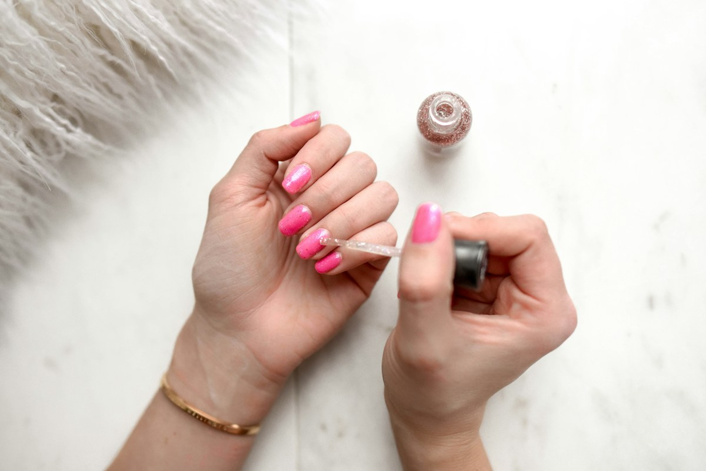

A field guide to how skin behaves.
Skin type is a useful organizing idea—not a fixed identity or medical diagnosis. Begin with observation and keep room for change.
Type, state and sensitivity can overlap.
Your baseline oil pattern is often described as dry, oily, combination or normal. Dehydration is a temporary lack-of-water state that can occur across types. Sensitivity describes a tendency toward discomfort or reactivity and can overlap too.

Select the closest pattern
Prioritize comfort and continuity
What it may feel like
Tightness, rough texture or a preference for richer layers.
Try a gentle cream cleanser, humectant support and an emollient-rich moisturizer. Avoid chasing a squeaky-clean finish.
Lightweight does not mean moisture-free.
Oil-prone skin can still feel dehydrated. Look for comfortable cleansing and gel or lotion textures rather than harsh, repeated stripping.
Useful categories
Gel cleansers · niacinamide serums · light moisturizers · fluid sunscreens
Browse oily-skin options
One face can have more than one preference.
Use thinner layers across oilier zones and a little more moisturizer where skin feels dry. Zone-based use can be more practical than forcing one heavy texture everywhere.
Steady skin still benefits from basics.
A comfortable baseline is not permission to skip sun protection. A gentle cleanse, flexible moisturizer and sunscreen may be all that is needed.
Slow introductions tell you more.
Patch testing and changing one product at a time can make patterns easier to observe. Persistent burning, swelling or rash needs qualified medical care.
The foundation stays familiar
Cleanse
Remove what needs removing without unnecessary friction.
Choose one goal
Add a focused product only when the basics feel steady.
Moisturize
Adjust texture or amount by season and zone.
Protect
Use broad-spectrum sunscreen and other sun-protective measures.
Ready to reflect?
Answer six everyday questions and get a conservative starting point for product discovery.
Take the skin quizYour baseline tendencies can be influenced by season, environment, routine, hormones and age.
No. This guide uses sensitivity as a general observation and does not identify medical conditions.